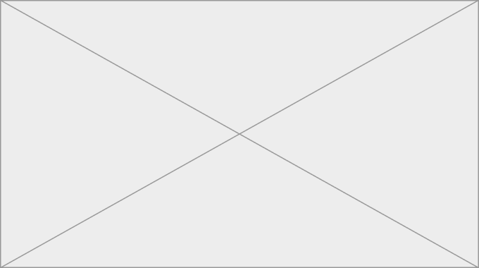

La nave
Per le Eolie la nave è la strada: porta persone, acqua, gasolio e rifiuti, e d’inverno può fermarsi per giorni.
Un tema che attraversa tutte le isole
La più grande delle Eolie, e il centro di un comune che ne comprende sei.

Da Milazzo, con traghetti e aliscafi. Gli orari cambiano tra estate e inverno: nella scheda vanno tutti e due, con la fonte e la data.
Lipari non è collegata alla rete elettrica nazionale: l’ARERA la elenca tra le isole minori non interconnesse.
Per le Eolie la nave è la strada: porta persone, acqua, gasolio e rifiuti, e d’inverno può fermarsi per giorni.
Un tema che attraversa tutte le isole